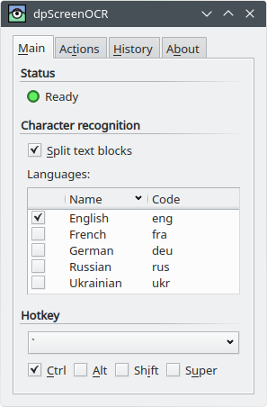
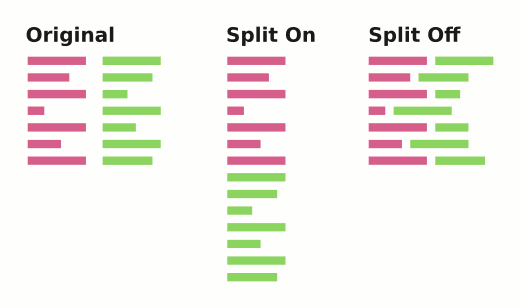

dpScreenOCR is a program to recognize text on screen. Powered by Tesseract, it supports more than 100 languages and can split independent text blocks, e.g. columns. dpScreenOCR is free and open source software that works on GNU/Linux and any other Unix-like system with X11.
The dpScreenOCR website provides several download options, including repositories and packages for Debian, Ubuntu, and derivative systems. Downloads for other systems may be added later.
If you don’t find a suitable choice for your system, download the source code tarball, unpack it anywhere, and follow the instructions in the doc/building-unix.txt file.
Use your package manager to install language packs for Tesseract. The package names may vary slightly across systems, but they usually start with “tesseract” and end with a language code or name. For example, the package for German have the following names:
tesseract-ocr-deu on Debian, Ubuntu, and derivativestesseract-data-deu on Arch Linuxtesseract-langpack-deu on Fedoratesseract-ocr-traineddata-german on openSUSEBe aware that on some systems (like Fedora) English is a part of the main tesseract package.
There are also two special packs that provide extra features rather than languages: osd (automatic script and orientation detection) and equ (math and equation detection). dpScreenOCR doesn’t use them.
dpScreenOCR is simple to use:
After these steps, dpScreenOCR will recognize the text from the selected area and process it according to the actions from the Actions tab.

The status shows the state of dpScreenOCR:
Green: The program is ready to use. You can press the hotkey to start a new selection.
Yellow: The program recognizes text. This status text will show you the progress.
Red: The program needs some setup. There may be three reasons:
No languages are available. Please install some language packs for Tesseract as described in the “Installing languages” section and restart dpScreenOCR.
No languages are selected. You need to select at least one language in the language list.
No actions are selected. You need to select at least one action in the Actions tab.
The yellow and red status messages are also displayed in the title of the dpScreenOCR’s window.
Options in this section control how dpScreenOCR will recognize text.
If this option is enabled, dpScreenOCR will try to detect and split independent text blocks, e.g. columns. This behavior is best described by the following picture:

The language list shows all available language packs that dpScreenOCR can use to recognize text. You can choose more than one language, but be aware that this may slow down recognition and reduce its accuracy.
If you want to install more language packs, read the “Installing languages” section.
The hotkey is used to start and end the on-screen selection. The default is Control + Grave accent. To cancel the selection, press Escape.
The hotkey is global: it works even if dpScreenOCR’s window is minimized. If pressing the hotkey has no effect, it probably means that another program is already using it. In this case, try to choose a different key combination.
The Actions tab allows you to choose what dpScreenOCR will do with the recognized text.
This action will copy the text to the clipboard.
This action will add the text to the history located in the History tab. You can later save the history to a file in plain text, HTML, or JSON format.
This action will run an executable with the text as the first argument. The “Run executable” entry expects either an absolute path to the executable, or just its name in case it’s located in one of the paths of your PATH environment variable.
The “Run executable” action is useful for those who have knowledge of a scripting language, such as Unix shell, Python, or Perl. Before using your script, make sure it starts with a proper shebang and you have execute permission (run chmod u+x your_script...).
Here is an example Unix shell script that translates the recognized text to your native language using Translate Shell, appends both original and translation to the translations.txt file in your home directory, and displays the translation as a desktop notification.
#!/bin/sh
TR=$(trans -b "$1")
printf "> Original\n\n%s\n" "$1" >> ~/translations.txt
printf "> Translated\n\n%s\n\n\n" "$TR" >> ~/translations.txt
notify-send "Translation" "$TR"The History tab shows the history of recognized texts. A text is only added here if the corresponding action is enabled in the Actions tab. Every text in the list has a timestamp taken at the moment you finish the selection.
You can save the history to a file in plain text, HTML, or JSON format.
This section is intended for advanced users and developers. It describes how to change some settings that are not available in the dpScreenOCR’s interface.
dpScreenOCR saves settings in the ~/.config/dpscreenocr/settings.cfg file, which you can modify with any text editor. To reset an option to the default value, remove it from the file; to reset all options, clear the file or delete it. Be aware that dpScreenOCR rewrites settings on exit, so make sure you close the program before making changes.
An option value can be one of the following types:
String - an arbitrary sequence of characters, like a file path.
If the string should have leading or trailing whitespace, enclose it in double quotes. Obviously, quoting is also necessary if the string is actually starts and ends with a double quote.
Strings can contain the following escape sequences:
\b - backspace\f - form feed\n - line feed\r - carriage return\t - tabulation\\ - backslashEscaping tabulation is optional. Escaping the backslash is optional too, unless the backslash and the next character create one of the escape sequences.
Boolean: true or false.
Number, like 10 or -5.
Here is the list of all options that can only be changed by editing the settings file:
action_copy_to_clipboard_text_separator (\n\n by default) specify the separator for multiple texts for “Copy text to clipboard” action. This option only has effect if queuing is enabled (see ocr_allow_queuing).
Keep in mind that every text, if not empty, ends with a newline.
action_run_executable_wait_to_complete (true by default) whether to wait executable to complete.
hotkey_cancel_selection (Escape by default) - hotkey to cancel selection.
ocr_allow_queuing (true by default) allows to queue a new selection for recognition without waiting for the previous one to complete.
If this option is enabled, “Copy text to clipboard” action may receive more than one text at a time, in which case texts will be joined together using action_copy_to_clipboard_text_separator.
If this option is disabled, pressing the hotkey will have no effect until the recognition is done. This guarantees that the clipboard will receive exactly one text.
ocr_dump_debug_image (false by default) dump the image passed to Tesseract as dpso_debug.pgm to the current working directory.
ui_native_file_dialogs (true by default) use file dialogs native to your platform instead of the ones specific to the GUI framework.
This section contains the list of common issues and solutions to them. If the solutions don’t help, or you have an issue that is not listed here, please report the problem on the issue tracker.
The recognized text contains garbage
Pressing the hotkey has no effect
This hotkey is probably used by another program. Try to choose another key combination.
Are you using Wayland? It’s not yet supported. If possible, switch to X11 session.
“Run executable” action has no effect
Make sure you have execute permission. Run chmod u+x your_executable....
If your executable is a script, make sure it starts with a proper shebang.
Make sure that the “Run executable” entry contains either an absolute path to the executable, or just the name of the executable that resides in one of the paths of the PATH environment variable.
Texts are not added to the history